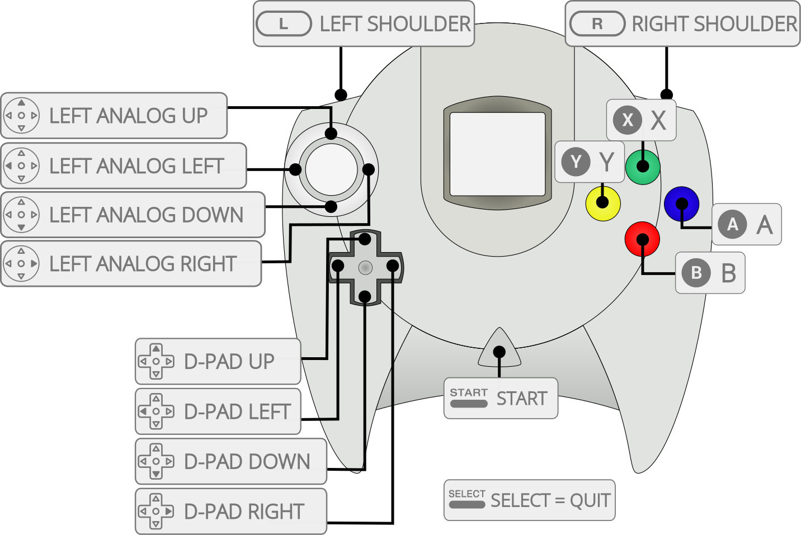

X
XRedream is a work-in-progress SEGA Dreamcast emulator written in C for Mac, Linux and Windows.
The Redream core has been authored by
The Redream core (libretro fork only) is licensed under
A summary of the licenses behind RetroArch and its cores can be found here.
This core requires OpenGL 3.3 or higher in order to work.
RetroArch's video driver must be set to OpenGL. Go to Settings -> Driver. If the ‘video driver’ is set to something else or than 'gl', switch to ‘gl’, and then restart.
!!! attention There is currently no ‘working’ macOS version available. This is because this core requires OpenGL core 3.3 context, and RetroArch on macOS currently does not support this.
!!! attention The firmware files need to be in a directory named 'dc' in RetroArch's system directory.
| Filename | Description | md5sum |
|---|---|---|
| dc/boot.bin | boot.bin (Dreamcast BIOS) - Required | e10c53c2f8b90bab96ead2d368858623 |
| dc/flash.bin | flash.bin (Date/Time/Language) - Required | 0a93f7940c455905bea6e392dfde92a4 |
Content that can be loaded by the Redream core have the following file extensions:
RetroArch database(s) that are associated with the Redream core:
Frontend-level settings or features that the Redream core respects.
| Feature | Supported |
|---|---|
| Restart | ✕ |
| Screenshots | ✔ |
| Saves | ✔ |
| States | ✕ |
| Rewind | ✕ |
| Netplay | ✕ |
| Core Options | ✕ |
| RetroAchievements | ✕ |
| RetroArch Cheats | ✕ |
| Native Cheats | ✕ |
| Controls | ✔ |
| Remapping | ✔ |
| Multi-Mouse | ✕ |
| Rumble | ✕ |
| Sensors | ✕ |
| Camera | ✕ |
| Location | ✕ |
| Subsystem | ✕ |
| Softpatching | ✕ |
| Disk Control | ✕ |
| Username | ✕ |
| Language | ✕ |
| Crop Overscan | ✕ |
| LEDs | ✕ |
The Redream core's library name is 'redream'
The Redream core saves/loads to/from these directories.
Frontend's Save directory
| File | Description |
|---|---|
| vmu0.bin | VMU Slot 1 Save |
| vmu1.bin | VMU Slot 2 Save |
| vmu2.bin | VMU Slot 3 Save |
| vmu3.bin | VMU Slot 4 Save |

| User 1 - 4 input descriptors | RetroPad Inputs |
|---|---|
| A | |
| X | |
| Start | |
| D-Pad Up | |
| D-Pad Down | |
| D-Pad Left | |
| D-Pad Right | |
| B | |
| Y | |
| L | |
| R | |
| Analog X | |
| Analog Y | X |
Since Redream is a work-in-progress Dreamcast emulator, expect sound issues, general compatibility issues, and a general rough experience.